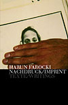

- farocki -
. Galt es, auch den Toten einen Platz bereitzuhalten. August 1999 wurden von Harun Farocki Notizen zum Filmprojekt veroeffentlicht. Farocki hat in seinen Filmen die Entwicklung der Neuen Linken in Westeuropa begleitet. Seit 1992 ist Harun Farocki Gastdozent an der University of California, Berkeley.
95 Consumer Add to CartSave to Wish List Is it in stock. . Farocki's film is about objects because, according to the director, "Gods and heroes are no longer imaginable. " Using behind-the-scenes glimpses of modern advertising offices, where employees toil at the proper placement of objects for maximum sales effect, Farocki presents a vision of our reality in which objects bear witness to their producers. 95 Consumer Add to CartSave to Wish List Is it in stock.
 |
. Flusser unterschied deutlich zwischen der Produktions- und der Rezeptionsseite des Films als Medium. Harun Farocki ist einer der ersten in Deutschland, die Flusser wahrgenommen haben, wie sein bereits 1986 publizierter Beitrag zeigt. ..
|  |
" August 9th 2001, Salone Blu, Hotel Palma au Lac, 3. . The 2001 edition focuses on the issue of realism in cinema and, in cooperation with the directors Harun Farocki and Villi Hermann, will explore the creative and productive process of documentary filmmaking. " August 9th 2001, Salone Blu, Hotel Palma au Lac, 3. .
A site I really like: http://www.timeoutny.com/video/212/212.video.farocki.open.html
.